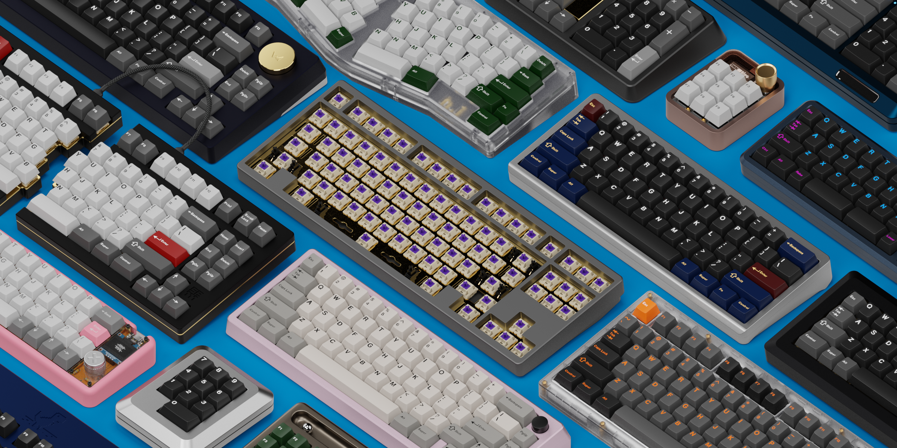

Willkommen beim Keyboard Render Kit!

Willkommen beim Keyboard Render Kit 2 und vielen Dank für Ihre Unterstützung!
KRK2 baut auf dem Workflow von KRK1 zum Austauschen von Objektdaten auf und macht dabei alles flexibler, unabhängiger und feiner abgestuft. Keycap-Profile hängen nicht mehr von der Geometrie eines anderen Profils ab, Tastaturen sind portabel, und alles lässt sich unabhängig voneinander von einer Version zur nächsten aktualisieren.
Voraussetzungen
Blender 3.3 oder neuer
Ein Rechner, der Blender Cycles ausführen kann
Links
Gumroad | BlenderMarket | Instagram | Discord | Legends Repo